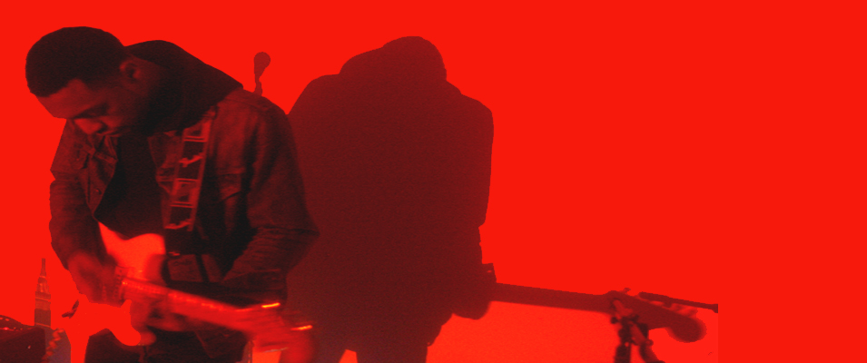
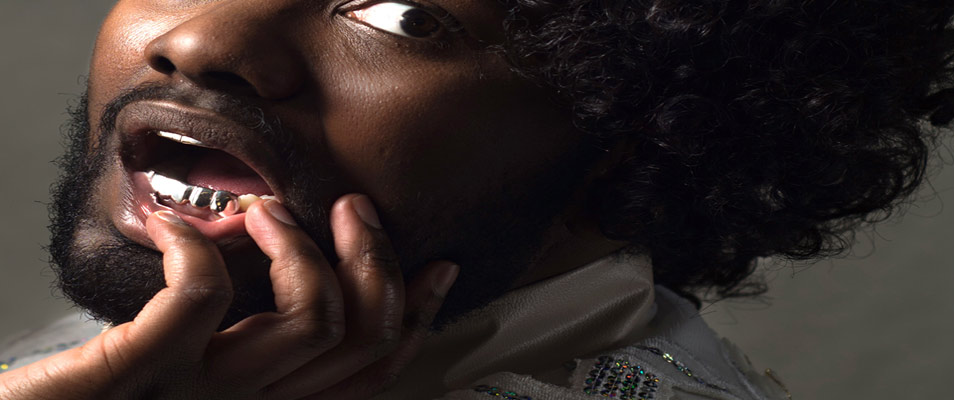
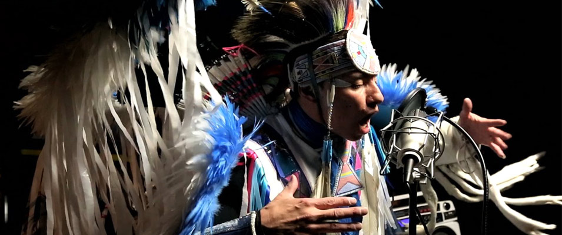
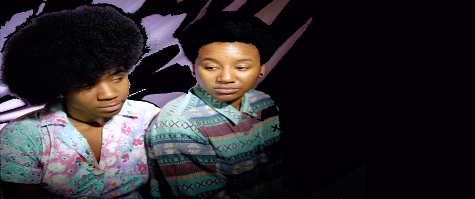

Highness brings a sense of royalty to the stage when they preform. Perhaps it is because the five-piece band is composed of all women, or that they are all stand alone artists in their own rights, or because they make conscious music that pushes boundaries and begs the question. The collective is composed of Gem Tree (on vocals), Loona Dae (on vocals), Schenay Mosely (on vocals and keyboard), Red (on drums), and Ora (on guitar)...[read more]
IN THIS ISSUE:
Jay Anderson
To call James Julius Anderson (better known as “Jay”) a prolific saxophone player would be a definite understatement. In the month of June alone he performed at 35 gigs, including three sets at Milwaukee's Summerfest. He’s played alongside jazz ensembles, Latin, Afrobeat, psychedelic rock, surf pop, folk punk, and hip-hop bands, to name a few...[read more]Pugs Atomz
Having started his own label, Birthrite Records, forming the crew Nacrobats, co-hosting the longstanding CTA Radio show with KMax on WPHK, and sitting as Creative Director of Iridium Clothing, Pugs Atomz is a veteran in the Chicago hip hop scene. Originally hailing from Pittsburgh and moving to Englewood in Chicago...[read more]The Jeff Gibbs Quartet
The Jeff Gibbs Quartet is a Chicago group of musicians with some serious chops making Jazz cool with their modern take on this classical style of music. Having grown up surrounded by music and encouraged to chase his musical dreams, Jeff Gibbs traded the cello for the saxophone and found his life’s calling. With a strong team of fellow...[read more]Lex Allen
Whether he’s singing about cancer, capitalism or voguing in your underwear, Lex Allen’s music will stir your emotions and shake your spirit. His soulful pop music is infused with the wisdom of his elders and spiked with the energy of his peers. Lex has his fair share of nourishing mothers, starting with a strong biological goddess, and his collective...[read more]Lili K
Lili K is Chicago’s very own precious stone, and that stone is a ruby. Coming off of releasing her first debut album, Ruby, this soulful jazz songstress Lili K is making tidal waves in the Chicago music scene, and is definitely having a rippling effect across the musical spectrum. You may know of her from her song “Hey Ma” with Chance the Rapper...[read more] Julian Bell
If the name Julian Bell doesn’t ring familiar, then soon it will. This rising young artist out of Chicago is heading back to the music basics and making some headway on his music career as a rock and blues guitarist. Looks can be deceiving, but his melodies are not, and neither is his finger work. No he is not a rapper, although he did play with Vic Mensa...[read more]Ace Da Vinci
Ace Da Vinci makes music to get high to. All drugs aside, despite the fact that his album “SEVENDAYHIGH” comes out on the popular stoner holiday 4/20, the music itself will leave you with an everlasting feeling that will take you through the motions of being hype, chill, inspired and motivated from his wide range of talented bars...[read more] Tunde Olaniran is more than just a brown boy. In his popular single he raps, “I’m every single thing you think of me/I’m a sinner, killer, drug dealer, refugee.” You can add amazing and fierce to that list as well. Hailing from Flint Michigan, he is a powerhouse making a name for himself through his unique music and conscious lyrics laid over...[read more]
Sylvan Esso is the love child of the folk meets electronic duo Nicholas Sanborn and Amelia Randall Meath. The two met over music and a dance floor, and what was supposed be a musical one night stand became a match made in heaven. Sanborn formerly of Megafaun, remixed “Play it Right,” Meath’s song with her former band...[read more]
With roots in techno and the birth of Motown, music is in Detroit’s bones. The same goes for Rachelle and Nick of Little Animal, a new duo, combining those roots and making it their own with a hint of electronic, indie and R&B. Front woman Rachelle is meek and charming, yet feisty and big when it comes to her vocals and stage...[read more]
Phox may be from a small town in Wisconsin, but they are making big waves in music. They just released their self-titled debut album after the success and accolades of their EP “Confetti” was released in 2013. This six piece band began with a group of childhood friends who enjoyed making music together, and evolved...[read more]
Bliss and Alice snuck into our ears and made quite a bang with his first mixtape Poetry Volume One. If you don’t know who this Milwaukee emcee is, you should, because you are missing out on one of the rising stars of hip hop. His effort is masterful, coming from a rookie, who is spitting veteran lyrics over violins and horns, taking influences...[read more]
Listening to the Filipino songstress and harpist Low Leaf out of Los Angeles is like having a spiritual experience. It’s not often that the harp, hip hop, soul and electronic fall into the same category. Low Leaf, who writes, mixes, produces and plays a number of instruments is able to meld together many different sounds and influences...[read more]
 Hip-hop artist Supaman is a prime example that you don’t have to compromise who you are in order to make meaningful music for the masses. Supaman on the mic, and Christian Parrish Takes the Gun in his everyday life, he was born and raised on an Indian reservation in Montana, and has used his Native heritage as the backbone...[read more]
 Whatever you do, you can’t funk with THEESatisfaction’s groove. The Seattle-based rapper Stasia "Stas" Irons and singer Catherine "Cat" Harris-White met back in college before they became queens and released their debut album AwE NaturalE back in 2012They found their claim to fame when they collaborated with Shabazz Place’s...[read more]